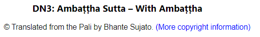
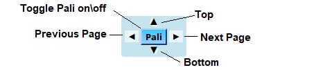
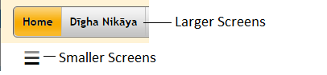
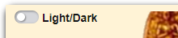
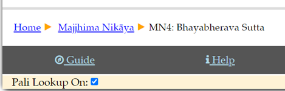
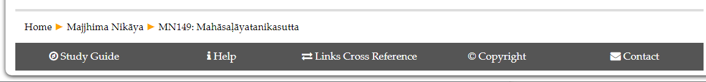
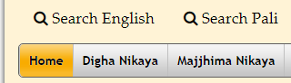

The Buddha’s Words
These pages are designed to make the best available translations of the Buddha’s words easily available in English and Pali. Please refer to the copyright page (or the copyright link on each translated page as pictured below) for more information.


As requested by some users of the wonderful Digital Pali Dictionary (DPD), the ability to turn Pali Lookup on and off has been added. A checkbox has been added to the bottom of each page so that Pali lookup can be turned on and off on devices which don't have a keyboard. The Digital Pali Dictionary is now incorporated into this site giving near 100% recognition of all Pali words.
I've changed the hosting company recently because GoDaddy was not able to fix a server error which prevented the English and the Pali search pages from being displayed. The site is now hosted by Accuweb hosting and those pages work but are slow to load (because I'm on the budget plan I suppose).
Fixed a problem which caused weird characters to be displayed on the two search pages. Also on the search pages, fixed the slide open side menu that was not displaying on small screens.
Keyboard shortcuts have also been added to make navigation around the site much easier. See below for a full list of the keyboard shortcuts.
Ajahn Brahmali's translations of the Vinaya have now replaced the older ones based on I B Horner's translations. Ajahn Brahmali's translations of the nuns' rules have now been completed.
The link to the Study Guide has been moved to the footer to improve navigation on tablets.
For those who want to install The Buddha's Words on a PC or Android device, information has been added on the Help Page to assist them.
I've finished improving, correcting and updating the Therigatha. There was a glitch where Pali words that have a variant reading caused some of the Pali text to be lost.
The cursor now automatically gets placed in the search box when a Search page is opened.
The February 2025 update of the Digital Pali Dictionary has been added.
The Control Panel
The control panel widget that appears on the right hand side of the screen provides navigation between previous and next pages and between the top and bottom of the page.
The Pali button appears wherever a Pali version is present (not all pages have a Pali translation). Clicking the Pali button toggles Pali on. Pali stays turned on until the button is clicked again. With Pali showing, hovering the cursor over a Pali word gives you the English translation of available words.
Pali can also be toggled on by pressing the * key.

Mobile Devices
The site has been designed to work well on a wide range of screen sizes. On smaller screens a "hamburger symbol" appears.

Dark Mode
If you'd prefer Dark Mode, the control at the top left of the screen toggles between dark and light modes. Dark mode can also be toggled on and off by pressing the d key.

Navigation Around The Site
Use the navigation at the top of the page to navigate to other pages.
Alternatively, the “breadcrumbs” at the bottom of each page contain clickable links to take you to the top of the current level, the top of the next higher level etc. or to this page. The last entry in the breadcrumbs is the current page.

Keyboard Shortcuts
There are some keyboard shortcuts to assist in navigating around the site:
Pressing the p key takes you to the previous sutta while pressing the n key takes you to the next sutta.
Pressing the d key turns dark mode on and off
Pressing the * key turns Pali on and off
Pressing the i key takes you to the next higher level of navigation
Pressing the h key takes you to the Home Page
Pressing the c key takes you to the Contact Page
Pressing the ? key takes you to the Help Page
Pressing the Control+Alt+l (i.e. lower case "L" for Lookup) key combination turns the Pali Lookup on and off. For Android devices there is a check box at the bottom of each page which also turns Pali lookup on and off.
Useful Links
Also at the bottom of every page are links to:
- A guide to the teachings of the Buddha (based on Bhikkhu Bodhi's "In the Buddha's Words").
- A Help page. (There is also a help link
 just below the site logo on each page.
just below the site logo on each page. - A Cross Reference for converting between Pali Text Society style references and the style of referencing used, for example, by Wisdom Publications etc.
- A page of copyright information.
- A page of information about contacting the Buddha's Words team.

Comments (Footnotes)
In the English text, hovering the cursor over an information icon ( Comments or footnotes appear in a pop-up box. ) shows the comment or footnote in a pop up text box. Move the cursor away to close the pop-up box.
Pali Text
With Pali showing, hovering the cursor over a Pali word gives you the English translation of available words. (Not all words have an English translation).
The Pali text contains a built-in Pali-English dictionary. The translation pops up with a  . Some of the Pali text is highlighted with a pale green background to indicate variant Pali readings. Hovering the cursor over the word will cause the variant reading (as well as the English translation) to be displayed in popups.
. Some of the Pali text is highlighted with a pale green background to indicate variant Pali readings. Hovering the cursor over the word will cause the variant reading (as well as the English translation) to be displayed in popups.

Search Entire Site
To search the English Content of the entire site, click on the Search English Content link in the header of each page.
To search the Pali Content of the entire site, click on the Search Pali Content link in the header of each page.
Please be warned that the first time either of the search pages is opened may take a while to load … after that it’s fine.

The search results will be displayed as hyperlinks that will take you to the relevant page but not to the exact location on the page. (Hint: Use right click | Open in new tab if you want to keep the results displayed) You will have to Search on Current Page (as below) until a future iteration of this work integrates the two types of searches.
Search on Current Page
Until we are able to implement a Find on this Page function, we reccomend using keyboard shortcuts such as the keyboard shortcut on Chrome: Ctrl+F. If Pali is toggled on when searching, both Pali and English matches are highlighted. Use the Next and Previous buttons to move between matches.
Pali searches ignore diacriticals. e.g. to find the word “pariyādāya” simply enter “pariya ..” (or even “par” to find matches).
To locate the sutta to which you have a Pali Text Society reference, a cross reference table is provided here.
Versions of these pages …
These pages are updated regularly to add content, fix mistakes and to make improvements.
The latest version can be downloaded by following this link or, if you need to type the location for some reason, here's a shortened version of the URL: https://tinyurl.com/y4gzyhgt
We've provided both zip and 7-zip archives with identical content. The 7-zip archiving is more efficient but not as easy to use (or as ubiquitous) as zip archives.
Last updated: 3rd March 2025